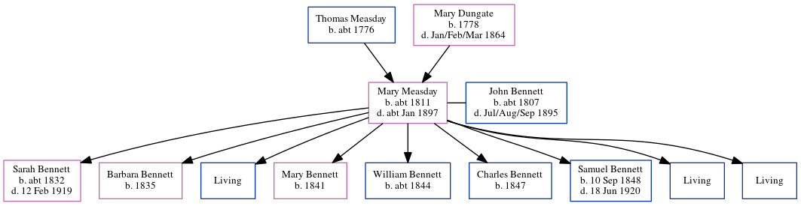

Mary Bennett (née Measday) c1811 - c1897
[ Home ] | [ Calendar ] | [ Surnames Index ] | [ Errors ] | [ Family History ]The child of Thomas Measday and Mary Dungate, Mary Measday, the 3 times great-grandmother of Nigel Horne, was born in Wingham, Kent, England c. 18111,2,3,4,5,6, was baptised there on 29 Sept 1811 and married John Bennett (an agricultural labourer with whom she had 9 children: Sarah Rebecca, Barbara, John, Mary, William, Charles, Samuel, George and Henry, along with 3 surviving children) at St Andrew's Church, Wickhambreaux, Kent, England on 14 May 18318 (Kent Family History Society CD22).
During her life, she was living at Fourturnings, Preston in Wingham on 30 Mar 185110; in Preston, Kent, England in 18612; at Fourturnings, Preston in Wingham on 7 Apr 186111; in Preston in 18713; in Bramling, Littlebourne, Kent on 3 Apr 18814; and at Wingham Street in Wickhambreaux on 5 Apr 18915.
She died c. Jan 1897 in Eastry, Kent, England6,7 and was buried at St Mary the Virgin Church in Wingham on 4 Jan 18979.
Parents
- Thomas was born c. 1776
- Mary was born in 1778
Children
- Sarah Rebecca was born c. 1832
- Barbara was born in 1835
- Mary was born in 1841
- William was born c. 1844
- Charles was born in 1847
- Samuel was born on 10 Sept 1848
Citations
- 1851 England Census Online publication - Provo, UT, USA: The Generations Network, Inc., 2005.Original data - Census Returns of England and Wales, 1851. Kew, Surrey, England: The National Archives of the UK (TNA): Public Record Office (PRO), 1851. Data imaged from the National
- 1861 England Census Online publication - Provo, UT, USA: The Generations Network, Inc., 2005.Original data - Census Returns of England and Wales, 1861. Kew, Surrey, England: The National Archives of the UK (TNA): Public Record Office (PRO), 1861. Data imaged from the National
- 1871 England Census Online publication - Provo, UT, USA: The Generations Network, Inc., 2004.Original data - Census Returns of England and Wales, 1871. Kew, Surrey, England: The National Archives of the UK (TNA): Public Record Office (PRO), 1871. Data imaged from the National
- 1881 England Census Online publication - Provo, UT, USA: The Generations Network, Inc., 2004. 1881 British Isles Census Index provided by The Church of Jesus Christ of Latter-day Saints © Copyright 1999 Intellectual Reserve, Inc. All rights reserved. All use is subject to the
- 1891 England Census Online publication - Provo, UT, USA: The Generations Network, Inc., 2005.Original data - Census Returns of England and Wales, 1891. Kew, Surrey, England: The National Archives of the UK (TNA): Public Record Office (PRO), 1891. Data imaged from The National
- England & Wales, FreeBMD Death Index: 1837-1915 Online publication - Provo, UT, USA: The Generations Network, Inc., 2006.Original data - General Register Office. England and Wales Civil Registration Indexes. London, England: General Register Office. © Crown copyright. Published by permission of the Cont
- England & Wales deaths 1837-2007 - Findmypast
- Kent, Canterbury Archdeaconry marriages 1538-1928 - Findmypast
- Kent, Canterbury Archdeaconry burials 1538-1988 - Findmypast
- 1851 England, Wales & Scotland Census - Findmypast (was age 38 and the wife of the head of the household)
- 1861 England, Wales & Scotland Census - Findmypast (was age 49 and the wife of the head of the household)
Notes
www.familysearch.org
Could be born in September 1811
Parents could be Thomas Measdy and Mary Dungate.
See also worldconnect.rootsweb.ancestry.com.
Media
Canterbury Burials - GBPRS/CANT/D/95389072
England & Wales deaths 1837-2007 - BMD/D/1897/1/AZ/000030/381
Canterbury Marriages - GBPRS/CANT/M/97154643/2
Canterbury Marriages - GBPRS/CANT/M/97154703/2
England Marriages 1538-1973 - R_848618542/2
England Marriages 1538-1973 - R_848618757/2
Family Tree
Map
Generated by ged2site. Last updated on Jul 3, 2024
Known Issues
worldconnect.rootsweb.ancestry.com in notes is not found
worldconnect.rootsweb.ancestry.com in notes is not found